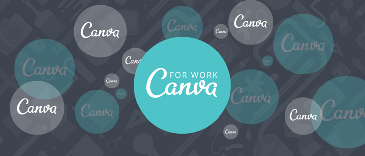

Home
Portfolio
About
Portfolio- Accumulation of Projects in AP CSP

CSP #1 - Scratch: Game Console
This is the 1st project of the AP CSP where I had to create a game
Scratch is a website intended to create games

CSP #2 - MIT App Inventor: Apps
This is the 2nd project of the AP CSP where I had to create an app
I made an app called "Geometry" where I designed a triangle to solve all 6 sides given certain pre-requisites of the user

CSP #3 - Python: Interactive Fiction
This is the 3rd project of AP CSP where I created an interactive fiction story
I made an interactivce fiction of tragedy called "Until Dawn". Users will play to game to achieve complete a mission and accomplish a goal
CSP #4 - Canva: Infographic
This is the 4th project of the AP CSP where I had to create an inforgraphic about myself.
Canva is a website intended to create designs simple for everyone, usually used for illustrations or for designs

Canva Download pdf
- - My Canva Document